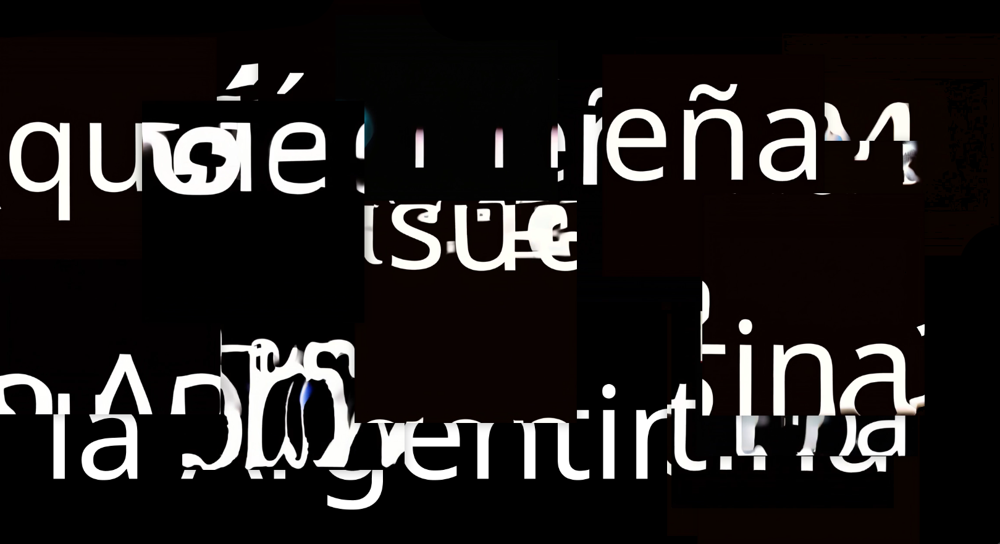

La relación entre
las partes y el todo
Read in ENGLISH
Volver a página principal


Introducción
En Agosto del 2024 pude realizar varias acciones gracias a Sensorialis, un ciclo de conciertos AV que proponen entrelazar la curiosidad científica con la curiosidad artística. En ese marco el concierto en el que participé se llamó Diásporas Nativas, y se realizó conjuntamente con el Museo de Ciencias Naturales Bernardino Rivadavia. Como parte de la propuesta conocimos las diversas colecciones botánicas de ese museo, y pudimos charlar directamente con los grupos de investigación que las estudian, conservan y hacen crecer.

En esa visita, además de entrar en contacto con diversos equipos de cientifiques y conocer su labor, el objetivo era hacer entrar en diálogo *algo* (aunque sea abstraido) de esas colecciones y esa visita. De esa experiencia muchas cosas quedaron resonando en mí - entre ellas la colección de paleobotánica con frutos fosilizados de hace millones de años de distintos lugares de la Argentina, y la colección botánica de las Islas Malvinas con especímenes recolectados a principios de siglo XX.


Pensaba en lo lejano que puede ser o estar lo "nuestro". En las relaciones entre lo cercano y lo lejano, y el rol de estas colecciones, la ciencia y el arte respecto a eso. Las relaciones entre las partes y el todo.
Me interesa tejer discursos y, más allá, tejer nuevos lenguajes para decir. Me parece un honor acercarse a poder sugerir relaciones entre las partes y el todo, lo pequeño y lo grande, lo del día a día y lo que es construido como histórico.
Por ej: Laura Richardson hablando sobre litio, petróleo y agua dulce de Argentina es un hecho construible como histórico. Hay una relación directa entre ese discurso y que les argentines solo podamos tocar plantas de Malvinas visitando las colecciones botánicas de museos.

Me interesaba poder plantear un sistema-instrumento que ponga a estas relaciones en primer plano, y que además se preste a juegos visuales-conceptuales de ocultamiento/develamiento rítmicos. Desde que empecé a livecodear investigo su potencial para exigir procesamiento por parte de las personas que participan, darles momentos con más pistas y luego que tengan que seguir el ritmo de los cambios y de la propuesta, si les interesa develar el mecanismo. Por eso siempre estoy buscando construir instrumentos nuevos que le agreguen capas a ese proceso.
Para esto pude hacer entrar en relación registros fotográficos que tomé de la visita guiada a las diversas colecciones botánicas que son campo de investigación en el Museo Argentino de Ciencias Naturales Bernardino Rivadavia. Además utilicé el Nodo de Cómputo de San Francisco, Córdoba, para poder hacer todo el procesamiento necesario para el sistema.
Cóndor Loop
Foto de algo en el museo. Screenshot del nodo computando.
Esta es la metodología que armé - algunas partes están automatizadas, otras son más manuales. Utilicé python para todo lo automatizado.
 Lo veamos paso por paso.
Lo veamos paso por paso.
Pensemos el proceso para una foto, ya que después esto se repite equivalentemente para todas las fotos que saqué en el Museo.
Sea una foto,
Por ejemplo:

Esta foto es fragmentada en 24 recortes aleatorios. En este proceso se guardan las posiciones originales de estos recortes.

Cada recorte es pasado por un modelo que toma una imágen y devuelve un video utilizando Inteligencia Artificial. Por atrás este modelo está buscando darle moción a la imagen de una manera probabilística. Por cada imagen hay 24 videos que realizar, correspondientes a los 24 retazos o recortes realizados antes. Para que haya una idea de tiempos de cómputo, un video de 5 segundos y de resolución 512x512 píxeles le toma al Nodo de Cómputo 2 minutos en realizar. O sea que animar 23 videos (el equivalente en mi sistema a una “imagen”) toma casi 50 minutos (si sale todo bien).
Ejemplo de un recorte pasado por IA:

Cada video-recorte está asociado a la imagen original y tiene guardado las posiciones a las que corresponden.
La loopera Cóndor tiene un secuenciador de conjuntos de videos: Toma un directorio de video-recortes y sabe ejecutar los 24 videos en simultaneo, que al posicionarlos en las posiciones originales vuelven a armar fragmentariamente la imagen original (o una parte, dependiendo de cómo se hizo el recorte)
 Un “video” está formado por videos. La gran mayoría de los recortes de por sí tienen poca información.
Un “video” está formado por videos. La gran mayoría de los recortes de por sí tienen poca información.
Cóndor me permite elegir si mostrar de a un video por vez, de a un par o todos a la vez, y cada cuánto cambiar al próximo conjunto de videos.
Pensaba en racimos de videos, porque pensaba en relaciones semánticas entre videos y lo que viene siendo una casi obsesión hace años: una loopera semántica. Debo haber implementado al menos 10 looperas completas en diversos lenguajes a lo largo de estos últimos tres años. Hice ya varias en python, varias en javascript, algunas en c++, un par en rust.
Si un video es un racimo de imágenes conectados semánticamente y yo pudiera extraer ese “tema” o “concepto” que los conecta, luego podría operar directamente entre conceptos para formar oraciones, párrafos, textos - en un sentido abstracto.
Como yo pienso lo que hago cuando performo visuales como montaje en vivo, siempre busco tener formas de operar semánticamente - aunque las relaciones semánticas hayan sido codificadas con reglas todavía, o hayan sido pre-calculadas - ya que el desarrollo de una manera automática y performante en tiempo real para inferir semánticas a partir de videos todavía no existe a la fecha.
En este caso intenté relacionar ciertos archivos con mis imágenes que vengo dándole vueltas de mi meta-proyecto ¿Qué sueña la Argentina?. Dentro de este proyecto está Lenguaje Frontera, que ganó el apoyo a la producción del cceba el año pasado y será exhibido este en el recoleta. Además está la perfo que hice a principios de este año en Underclub llamado Plan Condor AV. Está también Trabajo, que ganó el primer premio del Premio Itaú categoría Arte e IA.
En el enésimo plan cóndor.